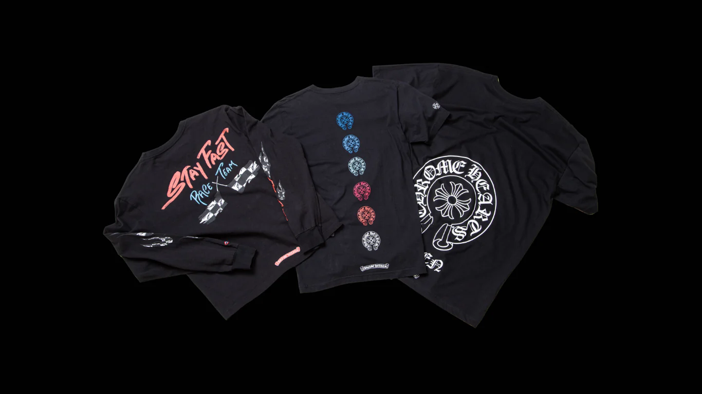
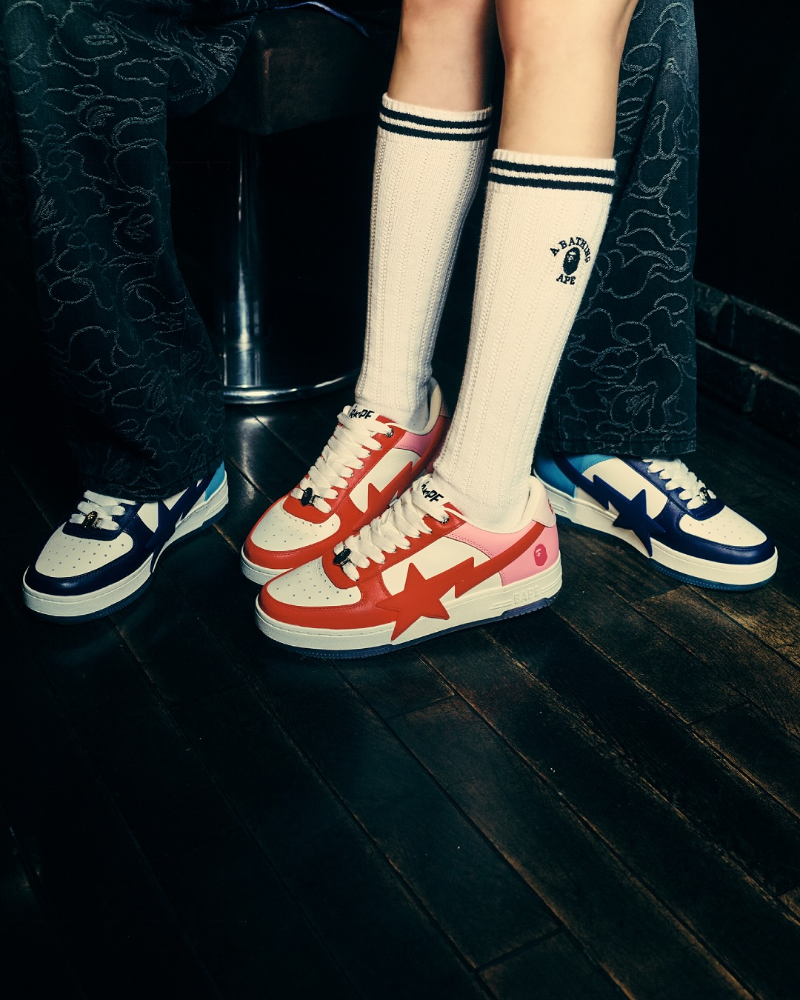
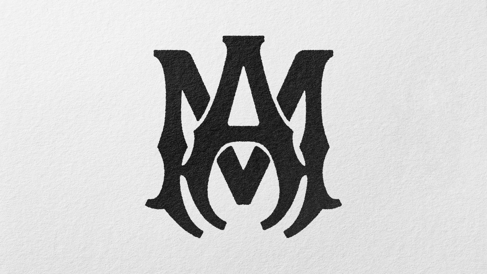
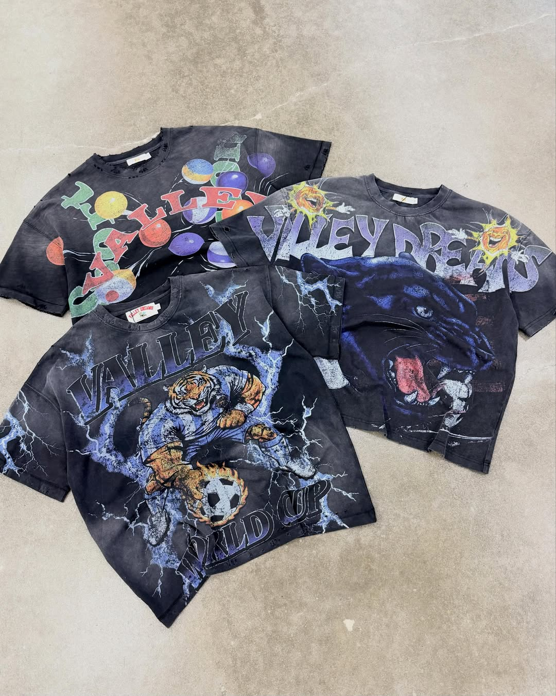
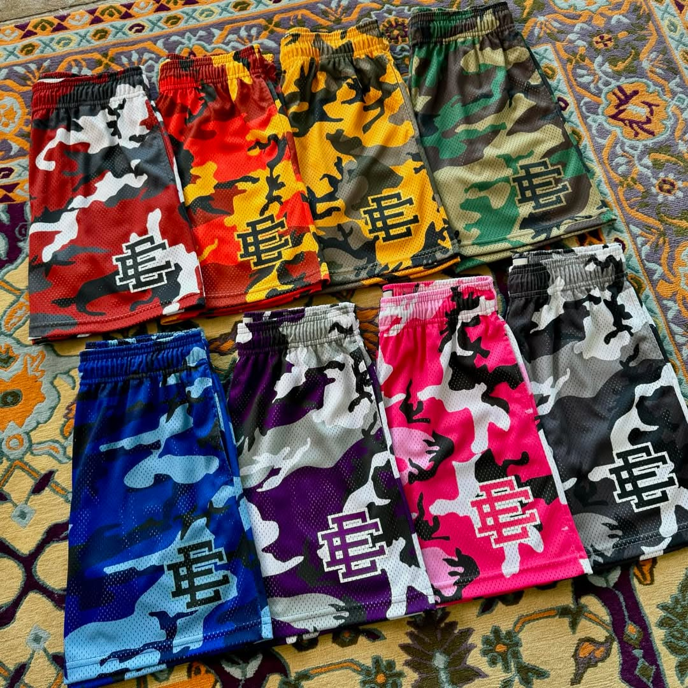
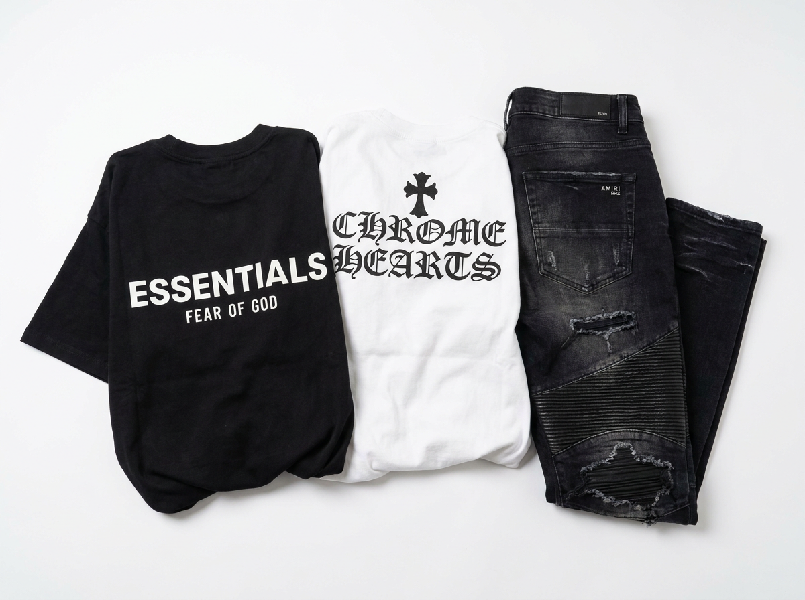
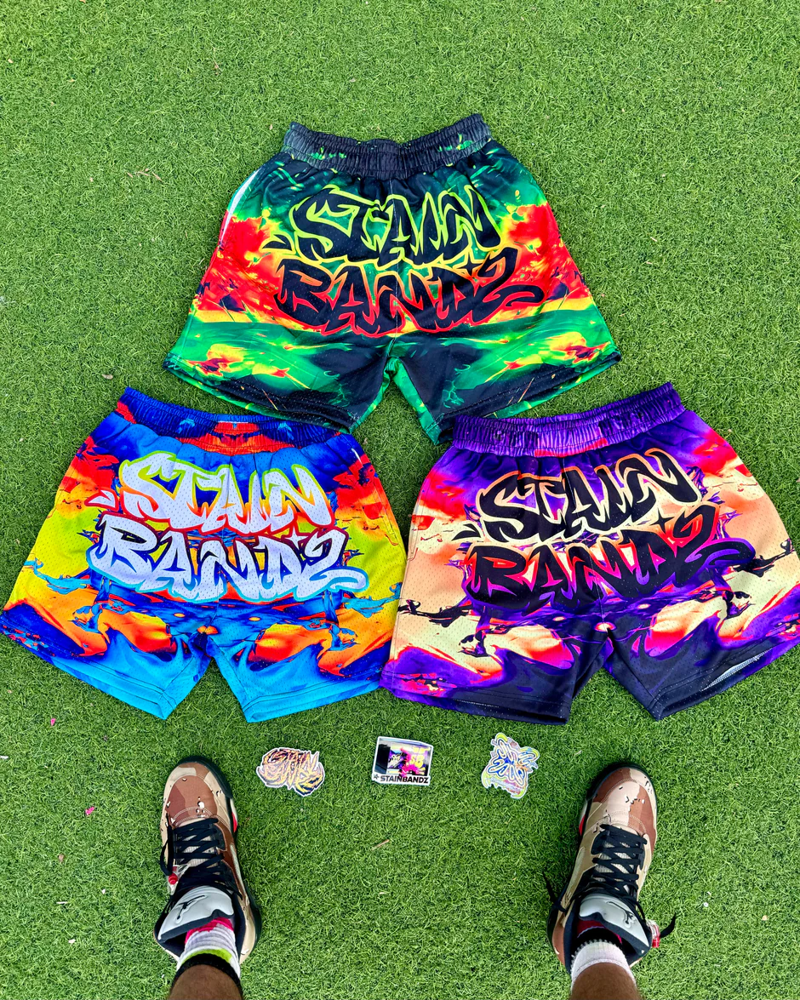
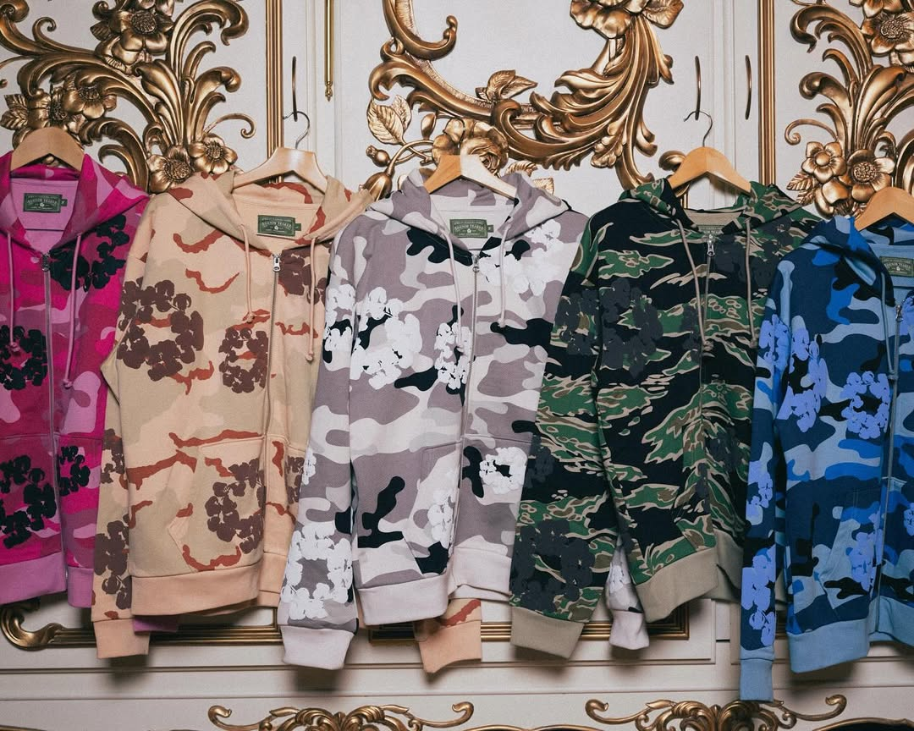
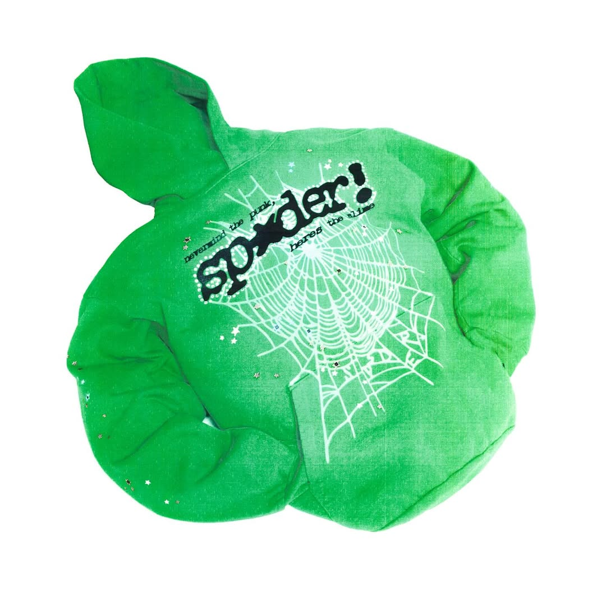
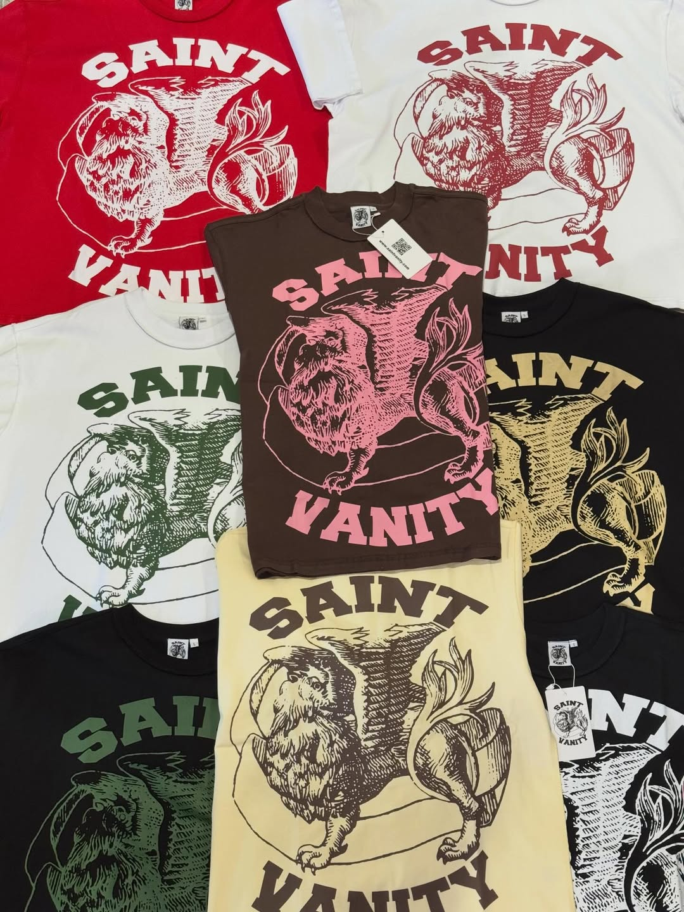

Brands We Buy & Sell
What We Buy & Sell
Bring in anything from a single tee to a full archive pull. Every brand has its own section below — click any card to jump straight to it.
Box logo tees, hoodies, jackets, decks, and accessories.

CH pieces in good condition — we authenticate before we quote.

Shark hoodies, camo pieces, Japan exclusives.

Luxury streetwear — authenticity and condition drive the offer.

Vale pieces with strong demand — bring it in and we'll quote it.

EE mesh shorts and collab drops hold real resale value.

Niche collector brand — limited production means strong resale.

SB Studios pieces — condition and edition drive the number.

Cotton wreath denim and collab pieces have a real collector following.

Sp5der has real resale demand right now — colourway matters.

Saint Vanity pieces in good condition — bring it in for a quote.
Godspeed limited pieces — demand and condition set the price.
Alo pieces in new or like-new condition — we check demand before quoting.
Mixed Emotion drops — condition and rarity drive the offer.
How It Works
Sell in One Visit
Most sellers are in and out in 15–20 minutes. Inspecting your pieces is free — you only sell if the number feels right.
-
Walk in or text photos first
Grab your pieces and a valid photo ID and come to 39 Avenue A. Got a bigger haul or something rare? Text photos to 917-608-8939 first and we'll give you a rough range before you make the trip.
-
We inspect and authenticate
We go through every piece at the counter — tags, stitching, hardware, colourways, any signs of wear. For Chrome Hearts and Amiri we check hardware and construction closely. For Supreme we look at box logo placement, font, and tags. Everything happens right in front of you.
-
We walk you through the offer
We'll tell you how we got to the number — current resale comps, condition grade, and demand for that specific piece. You're never guessing at why. Take your time. There's no pressure and no charge for the look.
-
Say yes and get paid today
Accept the offer and you walk out with cash the same day. Bring a valid photo ID — required by NY State law for all secondhand purchases.
Supreme
We Buy & Sell Supreme
Honestly Supreme is probably the brand we see the most at the counter every week. We know the catalog really well at this point — what's worth something, what's sitting on Grailed for months with no bids, which seasons people are actually paying for. Box logo stuff is always moving. Doesn't matter if it's got tags or not — a beat up box logo hoodie from a good season is still worth real money. We're not gonna low you on something just because you wore it a few times. But we do need to actually look at it — colorway, season, condition, whether the graphics are cracking. All that goes into the number. Don't just assume your piece isn't worth anything before you bring it in, because a lot of the time people walk in expecting fifty bucks and leave with a lot more than that.
What Supreme pieces are actually worth the most right now?
Box logo hoodies from the right seasons are always at the top — FW14, SS16, the TNF collabs, the LV collab from 2017, those kinds of things. After that it's collab box logos in general. Tees from the same categories. Certain accessories too — the money guns, specific decks, the camp caps from early seasons. The main thing is it's gotta be a piece people are actively looking for. We pull sold comps on StockX and Grailed before we give you a number, so whatever we're telling you is based on what people are actually paying right now, not some number we made up.
Does the season matter a lot or is it more about condition?
Both matter but in different ways. Season determines the ceiling — like there's a reason a 2002 box logo tee is worth more than a 2022 one even if the 2022 one looks brand new. But condition is what gets you to that ceiling or drags you way below it. A rare season piece that's completely trashed isn't gonna get you close to what it could. And a more recent piece in perfect deadstock condition can still earn you a solid offer even if it's not a grail. Tell us the season when you come in. If you don't know, we'll figure it out from the tags.
I have a Supreme collab piece — does that automatically make it worth more?
Usually yeah, but not automatically. Like a Supreme x Nike collab is gonna do better than a standard Supreme hoodie most of the time. But there are collab pieces that didn't really catch on in the resale market too. The LV collab, the Yohji Yamamoto stuff, the CDG drops — those have real collector demand. Some of the smaller collabs not so much. Bring it in and we'll look at current comps for that specific piece.
Do you buy Supreme accessories, decks, and random stuff?
Yeah, a lot of people don't realize some of the accessories hold serious value. Money guns, certain decks from limited collabs, camp caps from the right seasons, the brick — stuff like that. We've bought Supreme water bottles, Supreme nunchucks, all kinds of things. If it's Supreme and it's legit, bring it in and we'll tell you what it's worth. Don't toss it or sell it for nothing on Facebook Marketplace without checking with us first.
How do you actually authenticate Supreme — what are you looking at?
Tags first — font, spacing, the way the care label looks. Then the print quality on the box logo itself. The font on Supreme box logos is very specific and fakes almost always mess up the kerning or the thickness of the letters. Stitching on the inside of hoodies tells you a lot too. The hardware on jackets. The rubber on the Supreme camp caps. We've seen a lot of fakes at this point and we can usually catch them pretty fast. If something feels off we'll tell you exactly what we're looking at and why.
I bought my Supreme piece from a reseller — does that matter?
Not really, as long as the piece itself is real. Where you bought it from doesn't affect what we can offer — the piece is either authentic or it's not. If you have any receipts or order confirmations that's helpful but it's not required. We authenticate based on the physical piece, not the paper trail.
What condition does my Supreme piece need to be in?
There's no minimum condition requirement but condition obviously affects the offer. Deadstock with original tags gets the most. Tags removed but never worn is still great. Lightly worn with no major issues is fine. Fading, cracking graphics, pilling, or stains will lower the offer but it doesn't automatically mean we won't buy it. Bring it in and we'll grade it honestly. We'd rather tell you to your face what we see than have you guess at home.
Do you buy older Supreme pieces from like the early 2000s?
Absolutely — and those can be worth a lot depending on what it is. Early Supreme — like pre-2010 — has a real collector market separate from the hype stuff. If you have anything from the early NYC years, the downtown era, even just mid-2000s box logos, come in. Those pieces are genuinely hard to find and people pay for them. The older the piece the more the condition affects the number but even worn early Supreme can earn a solid offer.
Do you buy Supreme jackets and outerwear?
Yes. Work jackets, coaches jackets, the North Face collabs, Gore-Tex stuff — outerwear is some of the most valuable Supreme out there. The TNF collabs especially, those move really well. We look at condition of the hardware, zippers, any lining or padding, and of course the exterior fabric. Good condition Supreme outerwear from the right seasons is worth bringing in for sure.
Can I sell a full lot of Supreme pieces at once?
Yeah, bring it all. If you've got a large haul — like ten pieces or more — text us photos first at 917-608-8939 so we can set aside some time at the counter. We'll go through everything and give you individual prices or a bundle number, whatever ends up working better for both sides. Lot sellers are some of our best customers honestly.
Chrome Hearts
We Buy & Sell Chrome Hearts
Chrome Hearts is one of those brands where people either really know what they have or have no idea. We see both every week. CH doesn't go on sale, they don't do big runs, and they're not chasing hype — so pieces hold value in a way that a lot of streetwear brands don't. The fakes problem is real though. Chrome Hearts has some of the most convincing counterfeits we see, and we authenticate hard before we make any offer. The hardware is where fakes almost always fall apart — the real CH button and zipper hardware has a specific weight and finish that knockoffs can't get right. Graphics on tees are another one. The cross patterns and gothic lettering on real CH pieces have a level of detail and print quality that you can feel just picking it up. We've turned away plenty of pieces that looked good at first glance, so don't be offended if we look carefully — it protects you as much as us.
How do you authenticate Chrome Hearts? What exactly are you looking at?
Hardware first. The buttons, the zipper pulls, the fleur de lis details — real CH hardware has a specific weight and a matte-but-precise finish that fakes can't replicate. Then the graphic print quality. CH tee graphics are dense and detailed and the ink sits a certain way on the fabric. The label stitching inside is another tell — the font, the size, how it's sewn in. And overall construction. Real CH just feels more substantial than knockoffs. We've seen a lot of both and can usually tell pretty fast. If something makes us look twice we'll explain exactly what we're looking at.
Do Chrome Hearts collab pieces get a better offer than regular CH?
Usually yeah. The CH x Drake pieces — especially the Certified Lover Boy stuff — move really well. CH x Rolling Stones, CH x Off-White, CH x Bella Hadid — those all have collector demand on top of the regular CH market. That said, authenticity and condition still matter more than anything else. A trashed collab piece is still gonna get a lower offer than a clean standard CH hoodie. We check comps for the specific collab before quoting.
Do you buy used Chrome Hearts or only new?
We buy used all day. Chrome Hearts is expensive enough that barely-worn and even regularly-worn pieces are still worth real money. Lightly worn stuff with no major issues gets a strong offer. Heavy graphic cracking, serious fading, or damaged hardware drops the offer significantly but doesn't necessarily take it off the table. Come in and let us look at it — we'll tell you exactly what we see and what it does to the number.
What Chrome Hearts pieces are worth the most?
Collab pieces at the top, then limited or exclusive store-release tees and hoodies. The Hollywood store-exclusive stuff and the Matsuya Japan exclusives command premiums because they weren't widely available. Cross patch pieces and the leather jackets are also consistently strong. Trucker hats do well too — classic CH piece with steady demand. Anything with the horseshoe logo or the fleur de lis in a prominent way tends to move faster than basic CH.
Chrome Hearts prices seem all over the place online. How do you decide what to offer?
Yeah the asking price on CH on Grailed is genuinely all over the place — people list it for whatever they want. We look at sold comps, not asking prices. What something is listed for means nothing. What people are actually completing transactions at is what matters and that's what we base our offers on. We'll pull recent sold listings in front of you if you want to see where we're getting the number from.
I have a CH piece but I lost the tags — does that really hurt the value?
It matters but it's not the end of the world. Tags removed definitely lowers the offer compared to deadstock, but for Chrome Hearts the piece itself holds value regardless. If it's clean, authentic, and in good shape, we'll make a fair offer even without tags. Receipt or original packaging helps too but also not required.
Do you buy Chrome Hearts leather goods and accessories?
Yes. Leather wallets, belts, and bags from CH do well. The leather goods especially because they're expensive to begin with and people know what they're getting. We check the leather quality, the hardware, and the stitching before offering on anything. Same authentication process as the clothing — if it doesn't pass we'll tell you straight.
Is it worth coming in for just one Chrome Hearts tee?
Absolutely. A single authentic CH tee in good condition can be worth a couple hundred bucks depending on the graphic and condition. One piece is never too little to bring in. We get single item sellers all the time and it's never a problem. If anything, having less to go through means faster inspection and a faster offer.
My Chrome Hearts piece came from an estate — is provenance something you care about?
We authenticate the piece itself so provenance doesn't change what we offer — the physical item is what matters. If it passes authentication it's good regardless of where it came from. If it doesn't pass, provenance doesn't save it. Estate pieces can be really interesting actually — some of the older CH stuff comes through estate sales and it can be genuinely valuable. Bring it in.
How long does it take to inspect a Chrome Hearts piece?
Usually 5 to 10 minutes for a single piece. We don't rush authentication on CH because the fakes market is serious and we're not gonna give someone a real money offer on something we haven't properly checked. If you have several pieces plan for maybe 15 to 20 minutes. Everything happens at the counter in front of you — no back room, no waiting around wondering what we're doing.
A Bathing Ape
We Buy & Sell Bape
Bape is one of the only streetwear brands where something from 20 years ago can genuinely be worth more than something from last season. The shark hoodie is the icon — people have been hunting those since the early 2000s and the demand hasn't really slowed down. Full zip versions with the shark face panel are worth more than half-zips. The camo pieces are consistently in demand too, especially the purple or pink camo which moves faster than standard green. Japan exclusives are a whole separate category — if you have something that was only sold through the Harajuku store or a Japan-only drop, that affects the value in a real way. We also buy Bape Sta shoes in good condition. One thing worth knowing upfront is that Bape Japan and Bape US are treated differently in the resale market. US retail line doesn't command the same prices as pieces that came out of Japan, so we check the tags and country of origin on everything.
What Bape pieces are worth the most?
Full-zip shark hoodies from the early 2000s in good condition are at the top. The shark face panel has to be clean — if that's cracked or faded it tanks the value pretty significantly. After that it's Japan-exclusive camo pieces, collab tees with Nike or adidas or artists like Pharrell and Kanye-era stuff. Pink or purple camo almost always does better than standard green. And certain Bape Sta colorways move really well. Bring whatever you have and we'll check current comps before giving a number.
Does Bape Japan vs Bape US actually make a difference in price?
Yeah it does, meaningfully. Bape Japan pieces — especially from before they opened US stores — have a different level of collector interest. The quality was also slightly different in earlier years. We check the tags and care label to determine origin. If you know your piece is Japan-origin, mention it when you come in. If you're not sure, we'll figure it out from the labeling.
I have an old Bape hoodie with some wear — is it still worth bringing in?
Yes, definitely. Bape from the right era with honest wear is still worth real money because the pieces just aren't around in quantity anymore. Obviously a worn hoodie gets less than a clean one but we're not dismissing anything before we look at it. The main things we check are whether the shark face graphics are intact, whether the zipper hardware works, and what the overall condition of the camo fabric is. Bring it in before assuming it's not worth anything.
Do you buy Bape Sta shoes?
Yes. Bape Sta sneakers in good shape — especially deadstock pairs or lightly worn — do well. Same-day cash. We check the upper condition, the sole, the star hardware, and whether the box is included. Box adds a little but it's not required. Some colorways are more in demand than others so we'll look at current sold comps for your specific pair before offering.
Are Baby Milo pieces worth anything?
Some of them yes. Baby Milo had a big moment especially with the Japan-only pieces and the collab items. Standard Baby Milo tees don't move as well as shark or camo pieces but limited or collab Baby Milo stuff from the right era can be worth something. Text us a photo before you make the trip if you're not sure — we'll tell you straight whether it's worth bringing in.
What Bape collabs are people actually paying for right now?
The Nike collabs from the early 2000s are always in demand — the Air Force 1s and Dunks especially. adidas collab pieces, the Pharrell NERD stuff, the Kanye era Bape before he blew up. More recent stuff — the Undefeated collabs, certain Kaws Bape pieces — also moves. The key is that it has to be a collab people are actively looking for, not just a collab for the sake of it. We check current demand before quoting on any collab piece.
How do you authenticate Bape? What do fake Bape pieces usually get wrong?
The camo print is the first thing we look at. Real Bape camo has a very specific pattern density and coloring that fakes usually can't fully replicate — the pattern on fakes often looks slightly off, either too uniform or the colors are a little wrong. The zipper hardware on shark hoodies is another one — the teeth size, the pull, how it moves. Tags inside are usually where cheap fakes give themselves away fastest. The font and spacing on authentic Bape tags is pretty precise. We've seen a lot of both at this point so we know what to look for.
Do you buy full Bape outfits or sets?
Yeah if you've got matching camo sets or multiple pieces from the same drop we'll look at it all. Sometimes buying as a lot makes more sense than selling individual pieces. We'll go through everything and give you a number for each piece and a bundle offer if that works better. Just text ahead if you're bringing in five or more pieces so we can plan time at the counter.
What Bape pieces do you usually NOT buy?
Recent basic tees from the US line that don't have much resale demand. Heavily faded or damaged camo where the print is basically gone. Anything that fails authentication obviously. And Bape pieces from recent seasons that are still widely available retail — there's no real margin in those for either of us. If you're not sure whether your piece has resale demand, text us a photo first and we'll tell you.
Can I get a rough estimate before coming in?
Yeah text us photos at 917-608-8939 and we'll give you a ballpark. We can't give you a final number without seeing the piece in person but we can tell you if it's worth the trip and roughly what range we're working with. That way you're not coming in with completely different expectations than what we can offer.
Amiri
We Buy & Sell Amiri
Amiri is in a weird spot in the market because it's not quite luxury and not quite streetwear — it's its own thing and buyers know it. The MX1 jeans are the most recognizable piece and they're consistently what people are looking for. The black with white bone insets is the most in-demand colorway, indigo is close behind. The track jackets, the art patch stuff, the bones tees — all of that moves well when condition is good. We take Amiri authentication seriously because the fakes have gotten genuinely convincing over the last couple years. The leather patch is the main thing we look at first — the font, the stitching around it, the overall feel. Cheap Amiri knockoffs almost always have slightly off font weight on the patch or poor stitching at the corners. We go through the whole piece not just the patch though. Bring it in and give us a few minutes to look at it properly.
Do you buy Amiri MX1 jeans? What affects the offer on them?
Yeah MX1s are probably the Amiri piece we buy most. The main things affecting the offer: colorway (black and white bone insets is top, indigo is close, lighter or more unusual colorways depend on current demand), condition of the leather patch on the back (cracking or peeling hurts), condition of the bone insets themselves, and overall denim condition. Even worn pairs in decent shape are worth bringing in — just don't come in with jeans that are blown out or seriously damaged and expect full value.
How do you authenticate Amiri? What are you actually checking?
The leather patch first — font weight, letter spacing, the way the stitching sits around the edge of the patch. Real Amiri patches have clean, tight stitching all the way around with no gaps. The font on fakes is usually a little heavier or slightly different proportions. Then the denim itself — the weight, the distressing if it has it, how the hardware looks on the buttons and rivets. For tees we're looking at print quality and the label inside. We'll walk you through exactly what we find if anything looks off.
Do you buy Amiri bones tees?
Yes and they move well. The bones print is probably the most recognized Amiri graphic and buyers look for it specifically. Condition of the print matters a lot — cracking or fading on the bones themselves will affect the offer. Clean bones tees in good condition, especially deadstock or barely worn, get solid offers. Used but well-kept ones are still worth bringing in.
What about Amiri track jackets and outerwear?
Track jackets do well — the art patch jackets especially. For outerwear we check zippers, lining, any leather detailing, and hardware condition. Amiri outerwear tends to hold value better than tees just because it's a bigger purchase to begin with and buyers know it. Bring in whatever you have and we'll go through it.
Is Amiri knitwear worth bringing in?
Depends on the piece. Some Amiri knitwear moves well — the distressed styles and the pieces with distinctive graphics or patches. Plain knitwear without anything that sets it apart is harder to move at a fair price. Text us a photo first at 917-608-8939 and we'll tell you if it's worth the trip before you come in.
Amiri resells for a lot online. Why would the in-person offer be lower than Grailed prices?
Grailed listing prices and Grailed sold prices are two completely different things. We look at sold comps — what transactions actually completed — not what somebody is hoping to get. There's also fees on Grailed, the time to find a buyer, shipping, and the risk of disputes. We offer less than potential top-of-market because we're taking on all of that and paying you now. The tradeoff is you walk out with cash today instead of waiting weeks or months for the right buyer.
Do you buy Amiri pieces that are a few seasons old?
Yeah, age alone doesn't disqualify a piece. Amiri's aesthetic hasn't changed dramatically season to season so older pieces aren't dated in the same way fast fashion would be. The MX1 from five seasons ago and the MX1 from last season look pretty similar to buyers. Condition and colorway matter way more than how old it is.
I bought Amiri from an authorized retailer — does the receipt help?
It's helpful but not required. A receipt from an authorized retailer like Ssense, Mytheresa, or the Amiri store confirms where it came from which is reassuring, but we still authenticate the piece itself. The receipt doesn't replace the physical inspection. That said if you have it, bring it — every bit of documentation helps.
Do you buy Amiri hoodies?
Yes. Amiri hoodies — especially the ones with the MA logo or distinctive graphics — do well. We check the print, the hardware on the drawstring and zipper, and the overall fabric condition. Same authentication process as everything else. Clean Amiri hoodies in good condition get solid offers.
What Amiri pieces do you usually pass on?
Anything that fails authentication. Pieces with serious damage — major paint or ink on the denim, blown-out fabric, damaged leather patch that's more than surface scuffing. Very recent pieces that are still widely available at retail don't have enough margin for either of us. And plain basics without any distinctive Amiri detailing — those just don't have the same resale market. If you're not sure, text a photo first.
Vale
We Buy & Sell Vale
Vale has carved out a real spot in the NYC underground streetwear scene and we see it coming through the shop more and more. It's one of those brands where people in the know understand the value but a lot of people still sleep on it. We buy Vale pieces that have active resale demand — the limited drops move the best, and certain collab pieces have a following that pushes the price up. Condition is always the first thing we look at. Come in with whatever you've got and we'll pull current sold comps before telling you a number. We're not gonna make something up — we show you where the offer is coming from.
What Vale pieces are worth the most right now?
Limited drop pieces and collabs are at the top. Clean condition deadstock stuff always commands the most. For Vale specifically the demand can shift based on what dropped recently and what people are looking for in that moment — we check current comps every time so we're not quoting you based on something from six months ago.
Do you buy Vale pieces that have been worn?
Yeah, lightly worn Vale in good shape is fine. No major staining, cracking graphics, or damage and we'll make a fair offer. Heavy wear drops the number a lot but even worn pieces might be worth something depending on what it is. Don't toss it or sell it for nothing before you come in.
How do you price Vale pieces? The resale market seems inconsistent.
We pull sold comps, not asking prices. Grailed listings mean nothing — we look at what transactions actually closed. Vale's resale is less deep than Supreme or Chrome Hearts so the sold comp data is smaller but we work with what's there. If comps are sparse we'll be honest about that and price conservatively rather than gambling on a number.
Do Vale collab pieces get a better offer?
Usually yes. Collab pieces tend to have more targeted demand from people who are specifically looking for that item, which supports the price. We check demand for the specific collab before quoting — not every collab has the same market, but generally they do better than standalone pieces.
Is it worth coming in for just one Vale piece?
Absolutely. We never have a minimum. One tee, one hoodie, whatever it is — come in. If it's something we can make a real offer on we will. If it's not something we can move at a fair price for both sides we'll tell you straight and explain why.
Do you buy Vale outerwear?
Yes if it has resale demand. We check current comps for the specific piece. Vale outerwear in clean condition from a limited drop is definitely worth bringing in. Basic outerwear without much secondary market interest is harder to make work for both sides — text a photo first if you're unsure.
What if I'm not sure if my Vale piece has resale value?
Text us a photo at 917-608-8939. We'll look at it and tell you whether it's worth coming in. No reason to make the trip if it's not something we can give you a fair number on. We'd rather tell you upfront than waste your time.
Do Vale pieces need to come with original tags to get a good offer?
Tags help but they're not required. Deadstock with tags always gets the most. Tags removed but never worn is still strong. Worn but clean condition is still buyable for the right pieces. The piece itself is what we're buying.
How long does it take to inspect a Vale piece?
Fast — usually just a few minutes. We check condition, pull comps, and give you a number. There's no drawn-out process for most streetwear pieces. The whole thing start to finish is usually under 15 minutes including paperwork if you accept the offer.
Do you buy Vale every day or only certain days?
We buy any day we're open — Sunday through Thursday 12:30 to 6:30, Friday 12:30 to 6, Saturday closed. Walk in whenever. If you want to be sure someone who knows Vale well is there, text ahead and we'll confirm.
Eric Emanuel
We Buy & Sell Eric Emanuel
Eric Emanuel turned a mesh basketball short into one of the most sought-after pieces in streetwear and the resale market reflects it. The shorts are the main thing people come in with and they sell well — but colorway matters enormously. Some EE colorways move fast and get real money, others just sit. We check current sold comps on StockX and Grailed for the exact colorway before we quote anything. Collab pieces are generally stronger than standard pairs — the Adidas collab, the McDonald's drop, the NBA team shorts have a following that pushes prices up. Deadstock in original packaging is always the best case. Clean worn pairs are still buyable. Stuff that's been through the wash many times and has fading or snagging — that's harder to move at a price that's fair to either of us.
Do EE collab shorts get a better offer than standard pairs?
Yes, usually by a meaningful amount. The Adidas collab, the McDonald's drop, and the NBA team shorts have a collector demand on top of the regular EE market. That said some standard colorways are in just as much demand as certain collab pairs — it really depends on what the specific piece is. We pull comps for your exact shorts before quoting.
Does the colorway really make that big of a difference?
With EE it's probably the biggest single variable. Some colorways have a ton of demand — people are specifically looking for them and will pay. Others are sitting on Grailed with no activity. We check sold comps for the exact colorway so we're not guessing. If you bring in shorts and we can't find sold comps it's a sign the demand isn't there and we'll tell you straight.
Do you buy worn EE shorts or only deadstock?
We buy worn. Clean, lightly worn EE shorts in a good colorway are absolutely worth something. The mesh fabric is the thing we look at closely — any snagging, fading, or holes reduces the offer significantly. But "worn a couple times and washed properly" is totally fine. Don't assume they're worthless just because you wore them.
What size EE shorts do you buy? Do you pay more for certain sizes?
We buy all sizes. Size doesn't dramatically affect the offer the way colorway does but it's a factor — medium and large tend to have the most demand which can affect how quickly we can move them and therefore the number. Smaller or larger sizes might get slightly less if demand is lower for that size but it depends on the piece.
Do you buy EE hoodies and tracksuits too?
Yes. The hoodies and tracksuits don't get as much traffic as the shorts but they're definitely buyable. Collab versions do best. We check condition on the print and the overall fabric before quoting. Clean condition EE hoodies are worth bringing in along with your shorts if you have them.
My EE shorts are an older season — does that hurt the value?
Not automatically. Some older EE colorways are actually more in demand than newer ones because they're harder to find. The brand has been consistent enough in quality that season age matters less than colorway and condition. Bring them in or text a photo first and we'll check what the current market looks like for that specific drop.
Do you need the original bag or packaging?
Helpful but not required. EE mesh shorts come in that signature bag and having it is a nice bonus, especially for collab pieces. But the shorts themselves are what we're buying. No original packaging won't disqualify them — it might just slightly affect the top of the offer on deadstock pairs.
What EE pieces are NOT worth bringing in?
Shorts that are faded out from too many washes, have any snagging or holes in the mesh, or are in colorways we can't find any sold comps for. Very standard colorways from recent seasons that are still available retail also aren't worth much in the resale market. If you're not sure — text a photo first and we'll save you the trip if it doesn't make sense.
How do you authenticate EE shorts? Are fakes a real problem?
EE fakes exist but they're not as sophisticated as something like Chrome Hearts or Supreme. The main things we check are the embroidered logo quality, the mesh fabric feel and construction, and the waistband stitching. Real EE shorts have a specific weight and feel to the mesh and the embroidery is clean and precise. Fakes usually get the embroidery slightly off or the mesh feels cheaper. We'll tell you if something looks off.
Can I sell just one pair or do you prefer lots?
One pair is completely fine. We don't have a minimum. One pair of EE shorts takes about five minutes to look at and quote. Lots are welcome too but there's never any pressure to bring more than you have.
Enfants Riches Déprimés
We Buy & Sell ERD
ERD is one of the more niche brands we deal in but it has a dedicated collector base that knows what things are worth and pays accordingly. Henri Alexander Levy keeps production genuinely limited and doesn't restock things — so once something is gone it's gone and prices reflect that. The graphic work on ERD tees is distinct enough that people who want it are specifically looking for it, not just anything in that price range. We see ERD come through mostly from collectors who are clearing out or rotating pieces. Condition matters but the brand's collector base will still pay for lightly worn pieces in a way that more accessible brands won't see. We check condition, the specific piece, and current comps before quoting — ERD's resale market isn't as deep as Supreme so sometimes we have to look across a few platforms to get an accurate read.
Is ERD worth bringing in if it's been worn?
Lightly worn yes, definitely. ERD's limited production means collectors who want a specific piece will pay for it even lightly used because finding it deadstock is difficult. Heavily worn or damaged is a different story — that significantly affects the offer or might take it off the table. But "lightly worn, no damage" is absolutely worth coming in for.
How do you authenticate ERD pieces?
We look at the graphic print quality — ERD graphics are high quality and specific, the kind of detail that cheap knockoffs can't replicate well. The label and tags inside are another thing we check. Construction quality on the pieces — ERD uses good materials and the stitching and finishing reflects that. We've handled enough ERD to have a sense of what real pieces feel like versus something trying to be it.
What ERD pieces have the strongest resale right now?
The graphic tees with the most distinctive or recognized ERD imagery move the best. Leather pieces from limited runs. Denim if the condition is strong. Collab pieces when they come up. ERD's resale is niche enough that specific pieces can vary a lot — we pull comps before quoting rather than giving you a ballpark off the top of our heads.
The ERD resale market seems pretty thin — how do you price pieces?
Yeah it's a smaller market than Supreme or Chrome Hearts. We pull sold comps from Grailed, eBay, and a few other platforms. When the comp data is thin we're honest about that and price conservatively — we'd rather make a fair offer based on what we know than overpromise and have you feel like we lowballed you later. Sometimes we'll tell you the market data is sparse and give you a range rather than a hard number.
Do you buy ERD denim?
Yes. ERD denim in good condition is worth something to the right buyer. We check the condition of the fabric, any hardware or patches, and look at current comps for that specific piece. ERD denim tends to have a more specific buyer than something like Amiri MX1s, but the demand is real among people who know the brand.
Is ERD more of a "text photos first" situation?
It can be useful yeah, especially if you're coming from far away. ERD's market is niche enough that some pieces will have strong demand and others won't — texting a photo at 917-608-8939 lets us tell you if it's worth the trip before you come in. If you're nearby, just walk in — inspection is always free and no obligation.
Do you buy ERD jackets and leather goods?
Yes. ERD leather pieces especially are worth bringing in — the brand's leather goods are high quality and the collector demand is there. We check construction, hardware, and condition. Good condition ERD leather from a limited run can be a solid offer.
Is there a price range where ERD pieces usually fall?
Honestly it varies too much to give a general range without seeing the specific piece and checking comps. ERD graphic tees from popular drops can be in the hundreds. More common pieces might be less. Leather goods and limited items can be more. The only honest answer is to bring it in or text a photo and we'll tell you where it actually is in the market right now.
What ERD pieces do you usually pass on?
Anything where we can't find real sold comps to base an offer on — that puts us in guessing territory and we don't do that. Heavily damaged pieces. And ERD fakes — yes they exist and yes we check. If a piece doesn't pass we'll tell you what we found.
Do you need proof of purchase for ERD?
Not required. We authenticate the piece itself. A receipt is helpful supporting documentation but it doesn't replace our inspection and it's not required to sell. The physical piece is what we're evaluating.
SB Studios
We Buy & Sell SB Studios
SB Studios has built a following in the independent streetwear space and we buy the pieces that actually have secondary market traction. The resale market for SB Studios can be inconsistent drop to drop — some releases have real demand, others don't move much. We always check current sold comps before quoting anything, so our offer is based on what transactions are actually closing, not what somebody listed it for. Clean condition is important with SB Studios pieces — the brand's market rewards condition more than some others. If you have something from a limited run or a collab, that's the stuff most worth bringing in. Basics from standard runs are harder to make work at a price that's fair to both of us.
How do you price SB Studios pieces?
Sold comps on Grailed and eBay for the specific drop. SB Studios has enough variation between releases that we can't carry a general price in our heads — we check each piece individually. We'll show you where the number is coming from if you want to see the data.
Not every SB drop seems to have resale value — how do I know mine is worth something?
Honestly the easiest thing is to text us a photo at 917-608-8939 before coming in. We'll check quickly whether there's sold comp data for that specific piece. If there's not much there we'll tell you before you make the trip. If there is, come in. We'd rather save you a wasted visit than have you come in for something we can't do right by.
Do SB Studios collab pieces do better than standalone drops?
Generally yes. Collab pieces tend to have more targeted demand and more collector interest. The combined audience of two brands or artists usually pushes resale higher than a solo release. We check comps for the specific collab regardless.
Does condition matter more with SB Studios than other brands?
Probably yes, relatively speaking. The market for SB Studios is smaller than Supreme or Chrome Hearts, which means the pool of buyers is more selective. A beat-up piece in a thin market is harder to move at a fair price. Clean, well-kept condition helps a lot when the comp data is sparse.
Do you need the original tags for SB Studios?
Not required but they help. Deadstock with tags always earns the most. Tags off but never worn is still good. The piece itself is what we're buying.
What SB Studios pieces do you usually pass on?
Pieces with no sold comp data — if nobody's buying it in the resale market we can't offer you what it should be worth. Heavily worn or damaged pieces. Standard non-limited releases that are still available. We'll always tell you why if we can't make an offer work.
How long does it take to get an offer on an SB Studios piece?
Quick — maybe five minutes including pulling comps. If there's solid comp data the offer comes fast. If the market data is sparse we'll take a couple extra minutes to look across a few platforms before giving you a number or telling you why we can't make it work.
Do you buy SB Studios outerwear?
Yes if it has resale demand. Outerwear from limited drops in good condition is worth bringing in. Standard outerwear without much secondary market activity is harder. Text a photo first and we'll tell you straight.
I have multiple SB Studios pieces — can I sell them all at once?
Yeah bring them all. We'll go through each piece separately and give individual offers. You decide what to sell after you've heard all the numbers. No pressure to sell everything or anything if the offers don't feel right.
Do you buy SB Studios from non-NYC sellers or only locals?
We only do in-person transactions at 39 Avenue A. No mail-in, no online buying — you have to come to the shop. If you're from out of town and coming to NYC anyway, we're in the East Village, easy to get to. Otherwise we can't help remotely.
Denim Tears
We Buy & Sell Denim Tears
Denim Tears is one of the more culturally interesting brands we deal with. Tremaine Emory built the brand around storytelling and Black American history, and the pieces reflect that in a way that resonates with collectors beyond just the hype cycle. The cotton wreath jeans are the signature and consistently the most asked-for piece — the wreath embroidery on the sides is what everyone recognizes. The Levi's collab pieces do really well too. Archive drops and the graphic tees from specific campaigns have a collector following. We check the condition of the wreath embroidery specifically — that's the detail that makes the jeans valuable and it's the first thing any serious buyer looks at. Loose threads, missing sections, or fading of the embroidery color all affect the offer. Good condition denim with clean embroidery in the original cotton colorway is the best case.
Are the Denim Tears wreath jeans worth selling?
Yes and the condition of the wreath embroidery is the most important factor. Clean embroidery with no missing threads or fading on a pair in good denim condition gets a real offer. Deadstock pairs with tags earn the most. Even worn pairs are worth bringing in if the embroidery is intact and the denim isn't blown out. Don't assume they're not worth anything based on wear — come in and let us look.
Do the Levi's collab pieces get more than standard Denim Tears?
Generally yes. The Levi's collab has a dual-audience that drives demand — Levi's collectors and Denim Tears collectors both want it. That expands the buyer pool and supports the price. Condition of the denim and any embroidery or patches on the collab pieces still matters. We check comps for the specific collab piece before quoting.
Do you buy Denim Tears graphic tees?
Yes. Tees from specific campaigns — especially the cotton wreath print tees and pieces connected to notable drops — have a collector following. Standard graphic tees without much secondary market demand are harder to make work. Come in with what you have or text a photo first to check.
What condition do Denim Tears jeans need to be in?
The embroidery needs to be clean — that's non-negotiable for the top offers. Denim condition matters too of course. The cotton colorway (off-white/natural) vs black or other dyes affects demand. No holes or major distressing beyond what's intentional in the design. Worn pairs are fine as long as the embroidery is intact and the denim is in honest good condition.
Are older Denim Tears archive pieces worth more than recent drops?
Some of them yes. The earliest Denim Tears pieces — when it was still very underground and production was tiny — have archival value that more recent larger drops don't have the same way. If you have something from the very early days of the brand, before it blew up, that's worth specifically calling out when you come in. We'll pull comps for the era and the specific piece.
How do you price Denim Tears pieces?
Sold comps on Grailed and eBay for the specific piece. Denim Tears resale is real but not as deep as Supreme — sometimes the comp pool is smaller and we work with what's there. We'll be transparent about the data we're working from and if comps are sparse we'll tell you that rather than making up a number.
Do you authenticate Denim Tears pieces?
Yes. The embroidery quality on authentic pieces is specific — the wreath work is dense and precise. Fake Denim Tears exist but they're not super common. The tags inside, the embroidery quality, and the overall construction are what we look at. We'll tell you if something doesn't look right.
Can I bring in Denim Tears alongside other brands?
Of course. Bring everything at once — we'll go through each piece and give separate offers. Most people who come in with Denim Tears also have other streetwear. One visit, one conversation, one payout if you decide to sell.
Are Denim Tears hoodies worth bringing in?
Depends on the specific piece. Hoodies from notable drops or with distinctive graphics are worth bringing in. Basic or plain hoodies without much secondary market activity are harder. Text a photo first and we'll tell you if it's worth the trip.
Is it too late to sell Denim Tears or has the market cooled?
The wreath jeans still have real demand. The brand has enough cultural legitimacy that it's not a pure hype play that crashes — the collector base is there for reasons beyond trend. Specific pieces vary. Text us a photo and we'll tell you where your specific piece is in the current market rather than making a general statement that might not apply to what you have.
Sp5der
We Buy & Sell Sp5der
Sp5der has been one of the most active brands in streetwear resale over the last couple years and we buy it regularly. Young Thug's brand has genuine market traction and the web hoodie is the signature piece — people are specifically looking for it. Here's the thing with Sp5der though: colorway is probably more important here than any other brand we deal with. A pink web hoodie and a grey web hoodie are not the same thing in the resale market — like not even close. We check current sold comps on StockX and Grailed for the specific colorway before we give you any number. The market shifts too fast for us to carry an opinion from last month into today's conversation. Condition matters too obviously. Deadstock or barely worn is best. Sp5der fabric is distinctive enough that wear shows clearly — if the web print or the graphic has any cracking or heavy fading that's gonna come off the offer.
Which Sp5der colorways are worth the most right now?
This changes so we always pull current comps before quoting anything. But broadly speaking — pink, black, and certain limited colorways have had strong demand. The basic grey and more common colors move slower. Some collab colorways or limited releases command premiums. The honest answer is we don't carry a fixed answer for this because the market shifts and we price based on what things are selling for today specifically.
Do Sp5der tracksuits do better than individual hoodies?
Sets in matching condition can do slightly better than individual pieces depending on what a buyer is looking for. But they also divide well — sometimes someone wants just the hoodie. We'll quote both individually and as a set if you bring a matching pair. The colorway still matters more than whether it's a set or individual piece.
My Sp5der hoodie has been worn a few times — is it still worth bringing in?
Depends on the condition of the print and fabric. A few wears on a piece with no print cracking or fading and clean fabric — yeah absolutely worth coming in. The web graphic cracking or fading significantly drops the offer. Come in and let us look at it. Inspection is free and we'll tell you straight what we see.
Do Sp5der collab pieces get more?
Generally yes. Sp5der collab drops tend to have a more specific collector following and the limited quantities keep prices up. We check comps for the specific collab before quoting — not every collab has the same market but they usually do better than standalone pieces in the same colorway.
How do you authenticate Sp5der?
The web graphic quality is the main thing. Real Sp5der web graphics have a clean, precise edge and a specific texture in person. The tags inside — font, placement, how they're sewn — are another indicator. The fabric weight and overall construction. Sp5der fakes are around but they're not as sophisticated as the higher-end fake market for brands like CH or Supreme. We'll catch it if something's off.
Sp5der prices seem to be dropping — is it still worth selling now?
Prices for some things yes, for others not really. The market has matured from the peak hype period but strong colorways and limited pieces still command real money. If you're sitting on Sp5der and wondering whether to sell, sooner is generally better with a brand like this — the ceiling is usually when the brand is at peak cultural moment, not after. Text us a photo and we'll tell you where your specific piece is right now.
Do you buy Sp5der tees?
Yes. Tees in good condition from limited drops or notable colorways are buyable. Standard graphic tees without much secondary market demand are harder to make work — the print and graphic quality still needs to be good. Bring it in or text a photo first if you're not sure.
What size does Sp5der need to be? Are some sizes worth more?
We buy all sizes. Medium and large have the broadest demand which can affect how quickly we can move the piece, but it doesn't dramatically change the offer in most cases. Colorway is still the dominant factor by a lot.
Can I sell Sp5der and Supreme at the same time?
Yeah, bring everything. We go through each piece separately and give you individual offers. You don't have to decide on any of them until you've heard all the numbers. Selling multiple brands in one visit is totally normal and efficient — we handle it all at the counter.
How long does it take to get an offer on Sp5der?
Quick. We check condition, pull comps on your specific colorway, and give you a number usually within a few minutes per piece. For a single hoodie the whole inspection and offer process is maybe five to ten minutes. If you're accepting, another few minutes for paperwork and you're out with cash.
Saint Vanity
We Buy & Sell Saint Vanity
Saint Vanity has developed a real following in the NYC streetwear scene and we buy the pieces that have secondary market demand. Not every Saint Vanity drop has the same resale strength — the limited pieces and drops that sold out quickly tend to hold value, while more accessible pieces from larger runs are harder to make work at a fair price. We pull current sold comps before every offer so you're getting a number based on what things are actually trading at right now. Condition is important — clean pieces in good condition always get better offers and are easier for us to move. Come in or text photos first if you're not sure whether yours qualifies.
Do you buy all Saint Vanity drops or just certain ones?
We buy pieces with active resale demand — some Saint Vanity drops have it, others don't. Limited drops and sold-out pieces have the strongest market. We check current comps for the specific piece before quoting. If you're unsure whether yours has demand, text us a photo first.
What condition does Saint Vanity need to be in?
Good to excellent. Clean graphics, no major damage, nothing that would put off a secondary market buyer. Lightly worn is fine. Heavy wear, staining, or graphic cracking will significantly lower the offer or take it off the table. Saint Vanity's market is small enough that condition matters more than with bigger brands.
How do you price Saint Vanity?
Sold comps on Grailed and eBay. Saint Vanity's market isn't as deep as the bigger streetwear brands so sometimes the data is limited. We work with what's available and are transparent about the data when we give you a number.
Is it worth texting photos before coming in for Saint Vanity?
Yeah especially for Saint Vanity given the variability between drops. Text us at 917-608-8939 and we'll tell you quickly whether it's worth the trip. We'd rather give you a heads up than have you come in for something we can't do right by.
Do Saint Vanity collab pieces get more?
Generally yes. Collab pieces with the right partner can significantly expand the buyer pool and push prices up. We check comps for the specific collab — not every collab has the same impact on resale but they usually outperform standalone drops.
Do you buy Saint Vanity outerwear?
Yes if it has resale demand. Outerwear from limited runs in clean condition is worth bringing in. Standard outerwear without much secondary market activity is harder to make work. Text a photo first to save the trip if you're unsure.
Do tags need to be on the piece?
Not required. Tags on always earns the most. Tags removed but never worn is still strong. Worn but clean condition is buyable for the right pieces. Tags aren't a dealbreaker.
What Saint Vanity pieces do you usually pass on?
Pieces with no real sold comp data, heavily damaged items, and standard pieces from large runs that are still available. We always explain why if we can't make an offer work.
Can I bring in multiple brands at once with Saint Vanity?
Yeah, bring everything. We go through each piece separately. Mix of Supreme, Saint Vanity, Sp5der, whatever — one visit and we quote it all.
How long does an inspection take for Saint Vanity?
Quick — five minutes or so including pulling comps. Straightforward inspection, no authentication complexity like some other brands. If the piece has demand we give you a number fast.
Godspeed
We Buy & Sell Godspeed
Godspeed's limited-run approach means pieces can hold real value when demand is there. We check current resale data before making any offer. If you have a limited drop in clean condition, it's worth bringing in — we'll tell you straight what the market looks like right now.
How do you price Godspeed pieces?
We pull current sold comps on Grailed and eBay for the specific drop. Godspeed's resale varies by release — some have strong followings, others don't move. We're transparent about where we're getting our number from and will show you the data if you want to see it.
Alo
We Buy & Sell Alo
Alo has crossed over from yoga brand to streetwear status in a real way and there's a resale market for it, but condition matters more here than almost any other brand we deal with. The thing is — people buying Alo in the secondary market are mostly looking for new or near-new condition. Once Alo activewear has been worn and washed a bunch of times, it's hard to move at a price that's fair to either side. So our threshold is higher here. New with tags is the best case. Open-box but never worn or tried on and put back. Barely worn once or twice with no visible signs of use. If yours has been through regular rotation we'll probably have to pass or give you a number that doesn't feel worth it. Be straight with yourself about condition before you come in — it saves both of us time.
Does condition matter more for Alo than other brands?
Yes, significantly. The secondary market for Alo is mostly buyers looking for new or barely-touched pieces. Once Alo has been through regular wear and washing, the market gets a lot thinner. Deadstock or near-deadstock gets real offers. Regularly worn pieces usually don't make sense for either side. Be honest about condition before you come in — text a photo if you're not sure.
I have Alo with original tags never worn — is that worth something?
Yes, that's the best case for Alo. New with tags in clean condition — especially for popular styles or collab pieces — gets solid offers. Come in or text photos first to confirm what we're working with.
What specific Alo pieces do you buy?
Limited drops and collab pieces first. Popular styles in neutral or popular colorways. We check current sold comps for the specific style before quoting. Basic or very common pieces from large restocked runs are harder — there's too much of it around for the resale to be meaningful.
Does Alo collab stuff do better than standard Alo?
Usually yes. Collab pieces have a more specific collector market and the limited quantities support the price. Same condition rules apply — collab or not, Alo needs to be in excellent shape to get a real offer.
I wore my Alo like twice — is that still okay?
Twice with no visible wear, no pilling, no stretching, fabric still looks fresh — yes that's probably fine. "Twice" but it looks like it's been through a lot — that's a different story. We look at the actual condition of the piece not just the number of times you wore it. Come in and let us look.
Do you buy Alo men's and women's pieces?
Yes both. Same condition standards apply across the board. We check current comps for the specific style regardless of men's or women's.
What's the best way to know if my Alo is worth coming in for?
Text us photos at 917-608-8939. Photos of the piece laid flat, close-up of fabric condition, any wear or marks visible. We can tell pretty fast whether the condition meets threshold and whether the specific style has resale demand. Saves you the trip if it doesn't.
Do Alo pieces need to come with original packaging?
Not required but it helps for the deadstock case. If you have the original bag or box that's a nice bonus. The piece itself is what we're evaluating — original packaging adds a small amount but isn't required.
What Alo do you pass on?
Pieces that show visible wear — pilling, stretched fabric, fading. Anything washed many times. Very common styles that are still available retail in sizes and colors that aren't limited. Basically: if it doesn't look new or near-new, or if the style doesn't have secondary market demand, we're probably going to pass or the offer won't be worth your trip.
Is Alo a growing or shrinking resale market?
It's held up better than a lot of activewear brands that had hype moments. The brand has real staying power because it's not purely hype-driven — people actually wear it. That means the secondary market isn't crashing, but it also means the best stuff is still near-new condition pieces in popular styles. We check current demand before quoting so you're getting a read on right now, not a year ago.
Mixed Emotion
We Buy & Sell Mixed Emotion
Mixed Emotion has a following in the NYC underground scene and we see it come through the shop with people who are plugged into what's moving locally. The resale market is niche but real for the right pieces — limited drops that sold out quickly have a collector following that's willing to pay. We always check current comps before quoting because Mixed Emotion's market can shift quickly and we're not gonna give you a stale number. Condition matters, same as everything else. Text us photos first if you're not sure whether yours has demand — we'd rather take two minutes to check and tell you upfront than have you come all the way in for something we can't do right by.
Do you buy all Mixed Emotion drops?
We buy pieces with active resale demand — not every Mixed Emotion drop has that. Limited drops and sold-out pieces are where the value usually is. Text us a photo first at 917-608-8939 and we'll tell you quickly whether it's worth coming in.
How do you price Mixed Emotion pieces?
Sold comps on Grailed and eBay for the specific piece. Mixed Emotion's market is small so sometimes the comp data is limited. When that's the case we're transparent about it and price conservatively rather than guessing. We'll show you where the number is coming from.
What condition does Mixed Emotion need to be in?
Good to excellent. Clean graphics, no major damage. Lightly worn is fine for the right pieces. Given the smaller market for Mixed Emotion, condition matters more here than with bigger brands — a damaged piece in a thin market is hard to move at a fair price.
Do Mixed Emotion collab pieces get better offers?
Usually yes. Collab pieces tend to have more targeted demand and a larger combined audience. We check comps for the specific collab before quoting.
Is Mixed Emotion more of a "text first" situation?
Yeah, honestly yes. The variability between drops makes it worth checking before coming in. Takes us a couple minutes to look at a photo and tell you whether there's real comp data for that piece. We'd rather do that than waste your time.
Do you buy Mixed Emotion hoodies specifically?
Yes if they have resale demand. Limited run hoodies in clean condition are worth bringing in. Standard hoodies from large runs are harder. Text photos first to confirm.
What Mixed Emotion do you pass on?
Pieces with no sold comp data, heavily damaged items, standard releases from large runs, and anything that doesn't have secondary market activity we can find. We'll tell you why if we can't make an offer work.
Can I sell Mixed Emotion alongside other brands?
Yes, bring everything at once. We quote each piece separately and you decide what to sell after hearing all the numbers. One visit, one payout if you decide to sell.
Is Mixed Emotion a brand that's growing or is it niche?
It's still in the building phase of its scene. The NYC underground streetwear world does reward certain brands with real collector loyalty and Mixed Emotion has some of that. Whether it grows into a broader market depends on a lot of factors. Right now we buy the pieces that have demonstrated resale demand — we don't speculate on what might be worth something later.
How long does a Mixed Emotion inspection take?
Fast — a few minutes if the piece has comp data. The main time goes into pulling current comps, not authentication complexity. If the comps are there, we give you a number quickly.
917-608-8939 · Call or text anytime
Sun–Thu 12:30–6:30 PM · Fri 12:30–6:00 PM · Saturday closed
NYC DCA License #2070477 · Walk-ins always welcome